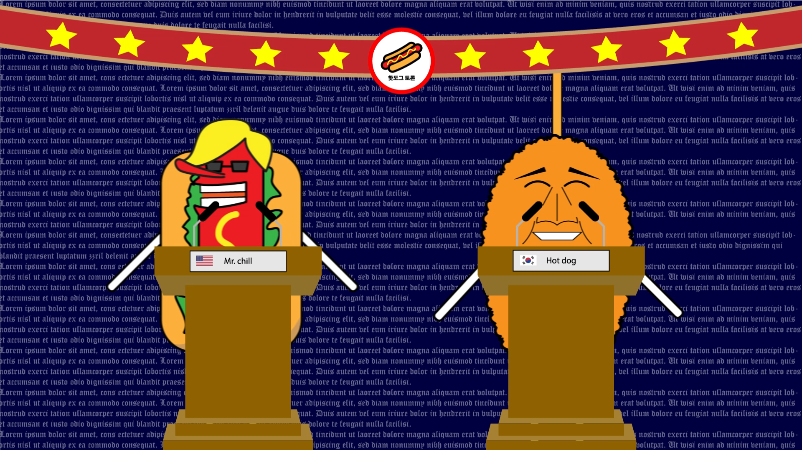
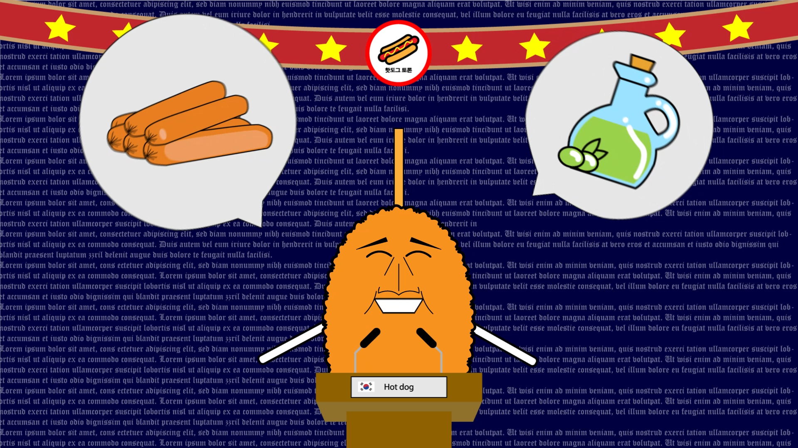
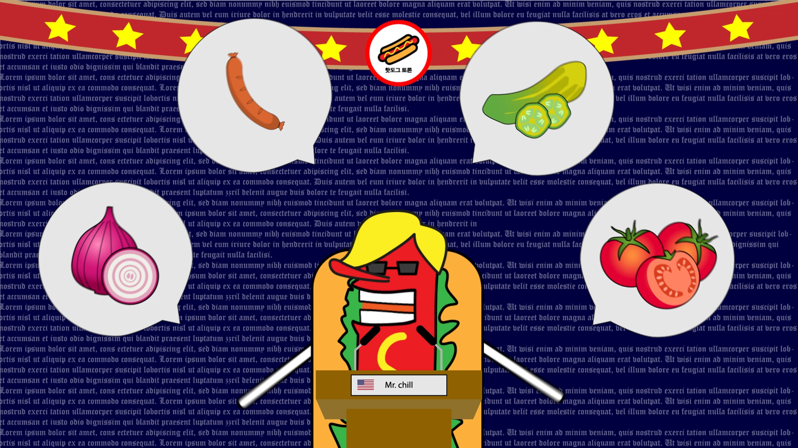
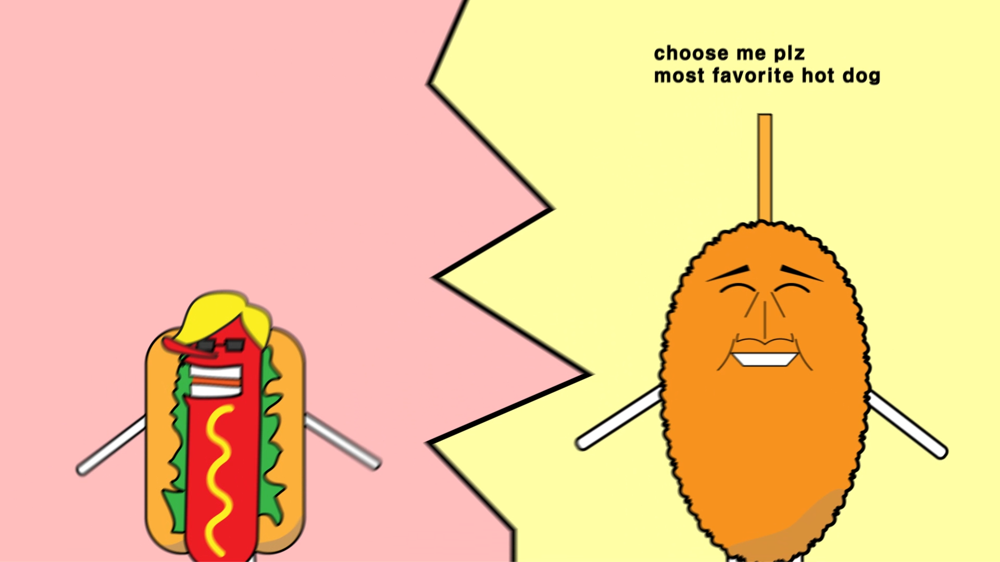
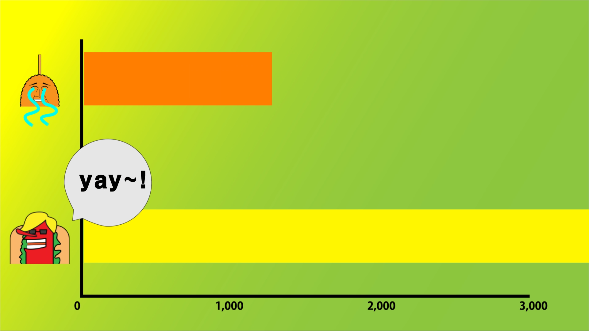
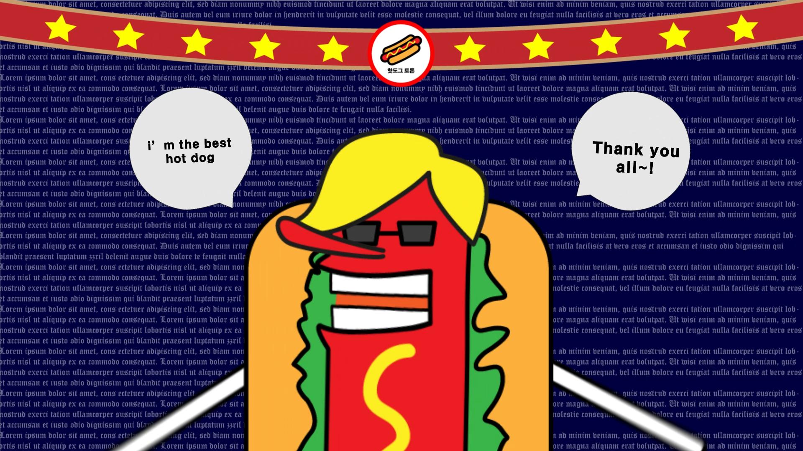
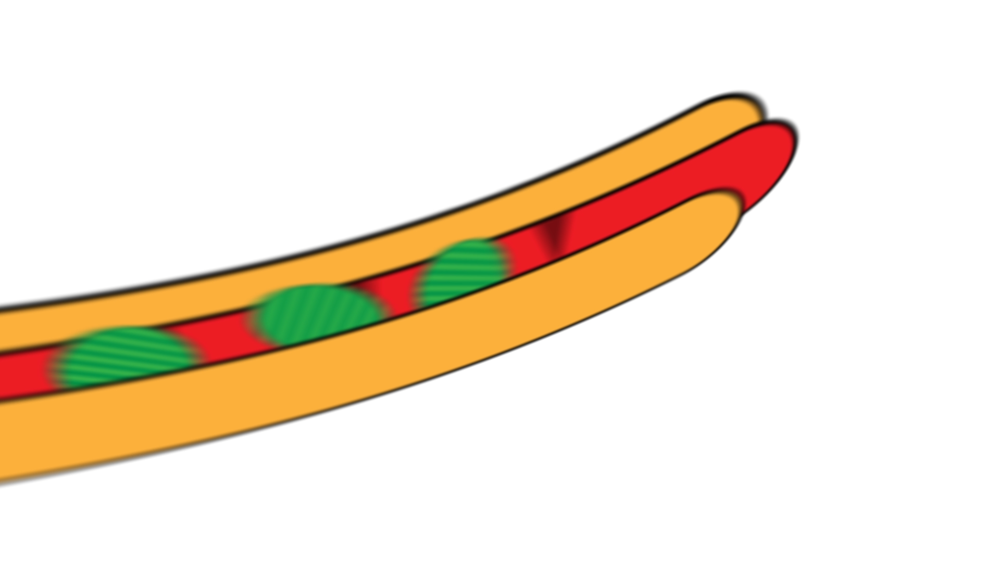
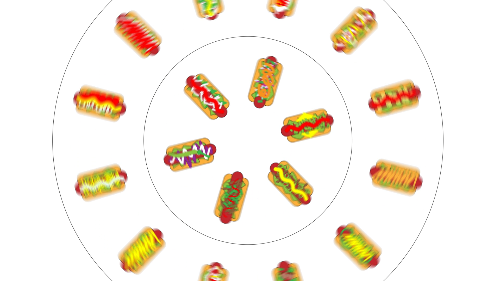
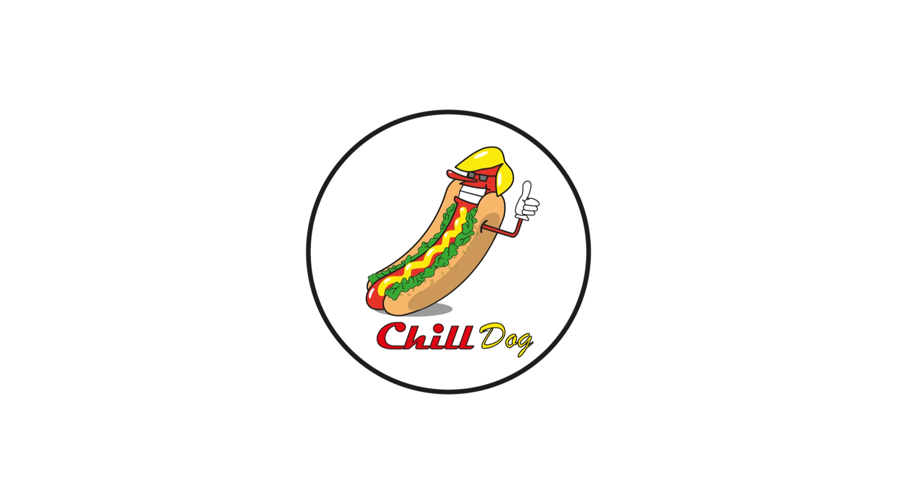

Home
Logo
Web
Video 1
Video 2
chill dog video
앞서 보여드렸던 ‘chill dog’ 로고를 사용하여 ‘애프터 이펙트’에서 영상을 만들었습니다. chill dog를 처음 소개하는 것과 기존 한국 핫도그와 다른 점을 보이려는 것에 중점을 두고 영상을 제작해보았습니다.
1.sequence

#1 첫 등장
칠도그와 핫도그가 처음 만나는 모습입니다.
서로 만나 말로써 경쟁을 하는 모습을 보이기 위해 배경을 대선 토론장처럼 만들었습니다.

#2 핫도그 설명
핫도그가 자신의 특징과 장점을 설명하는 장면입니다.
좋은 올리브 오일과 소세지를 사용합니다.

#3 칠도그 설명
칠도그가 핫도그와는 다른 자신의 특징을 설명합니다.
소세지 외에 다양한 재료가 포함됩니다.
2.sequence

#4 격돌
두 핫도그가 붙어서 더 격렬하게 싸우는 것처럼 보이려고 화면을 흔들리게 하고 한쪽이 얘기를 할 때는 사이즈가 커지고, 다른 쪽은 작아지게 하여 대비되게 만들었습니다.

#5 그래프
토론이 끝나고 나면 사람들의 투표를 받아 우승자를 결정짓듯이 그래프를 만들어 칠도그가 우승하게 만들었습니다.

#6 축하 연설
경쟁에서 승리한 칠도그가 자신의 소감을 간단히 얘기합니다.
3.sequence

#7 칠도그
칠도그가 만들어지는 장면입니다. 카메라 기능을 이용해서 xyz축에서 이리저리 움직이게 하여 역동적으로 보이게 만들었습니다.

#8 테이블
칠도그의 다양한 재료가 들어간 모습을 보이는 장면입니다. 서로 다른 방향으로 회전하는 테이블 위에 각각 칠도그를 올려놓아 다양하다는 점을 강조합니다. 테이블이 팅겨지며 하늘로 올라갑니다.

#9 엔딩
이전 장면의 테이블이 뒤집어 지면서 칠도그 로고가 보이고 화면 중앙에 놓이게 하여 영상을 마칩니다.